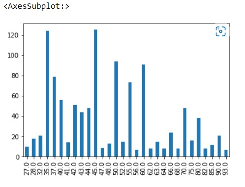

Bar Graphs
Bar Graph for ARAI Cratified Mileage For CNG
Bar Graph for ARAI Cratified Mileage
Bar Graph for Body Type
Bar Graph for Cylinder Configuration
Bar Graph for Cylinders
Bar Graph for Doors
Bar Graph for DriveTrain
Bar Graph for Emission Norm
Bar Graph for Engine Location
Bar Graph for Front Brakes
Bar Graph for Front Suspension
Bar Graph for Fuel System

Bar Graph for Fuel Tank Capacity
Bar Graph for Fuel Type
Bar Graph for gears
Bar Graph for Ground Clearance
Bar Graph for Highway Mileage
Bar Graph for Krab Weights
Bar Graph for Make

Bar Graph for Model
Bar Graph for Power seats
Bar Graph for Power Windows
Bar Graph for Rear Breaks
Bar Graph for Rear Suspension
Bar Graph for Seats Material

Bar Graph for Tachometer
Bar Graph for Tropmeter
Bar Graph for valve Per Cylinder